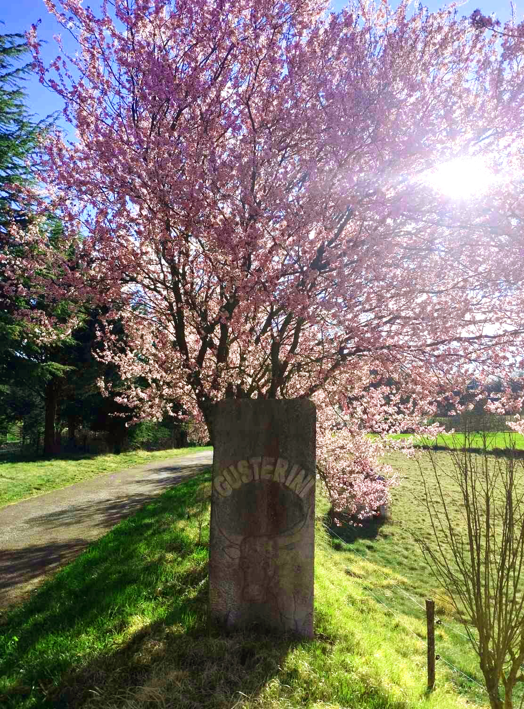

Tradicija
Dugogodišnje iskustvo i obiteljska tradicija temelj su našeg rada.
Upoznajte našu obiteljsku tradiciju i način rada na OPG-u Tončić.
OPG Tončić nalazi se na području općine Pićan i već više od 20 godina njeguje obiteljsku tradiciju uzgoja domaćeg voća, povrća i proizvodnje vina.
Na našem gospodarstvu obrađujemo više polja i vrtova te održavamo voćnjak u kojem uzgajamo različite vrste voća poput šljiva, krušaka, smokava, grožđa i jabuka.
Posebnu pažnju posvećujemo kvaliteti proizvoda, prirodnom uzgoju i predanom radu kroz cijelu godinu kako bismo našim kupcima ponudili svježe i domaće proizvode.

Dugogodišnje iskustvo i obiteljska tradicija temelj su našeg rada.
Svaki proizvod nastaje s posebnom pažnjom kako bi bio svjež i domaći.
Naš uzgoj temelji se na prirodnim metodama i brizi za okoliš.